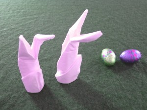
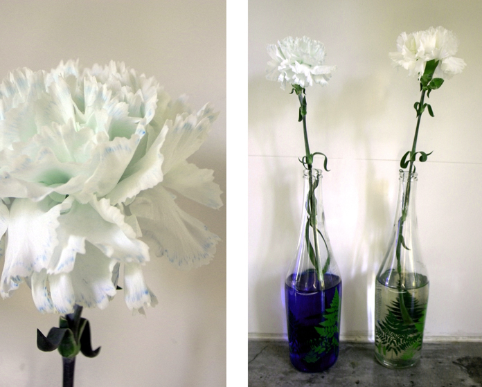
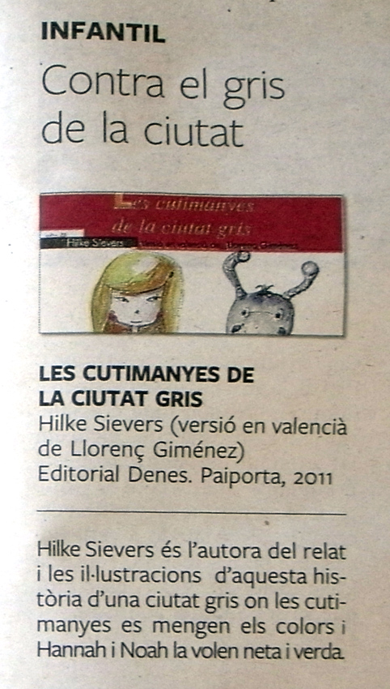
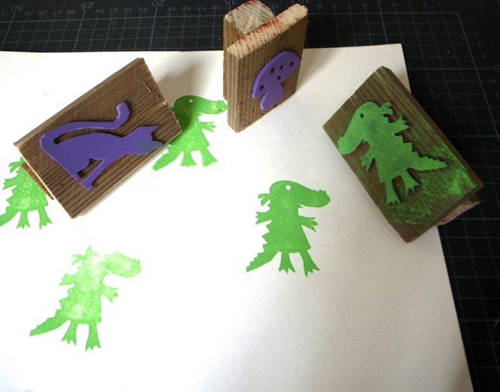
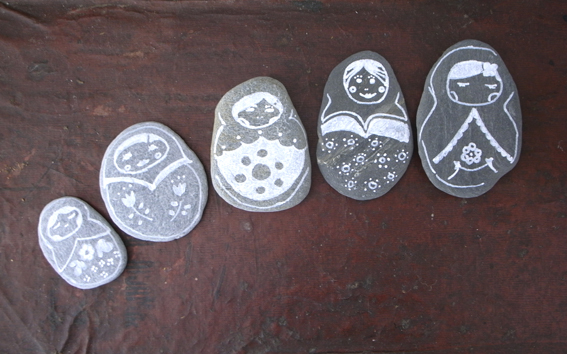
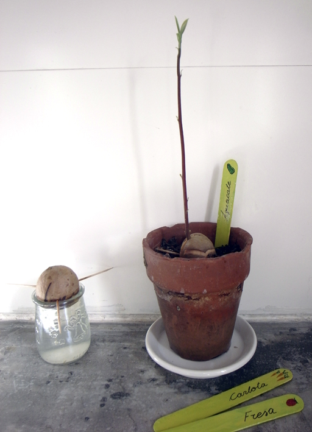
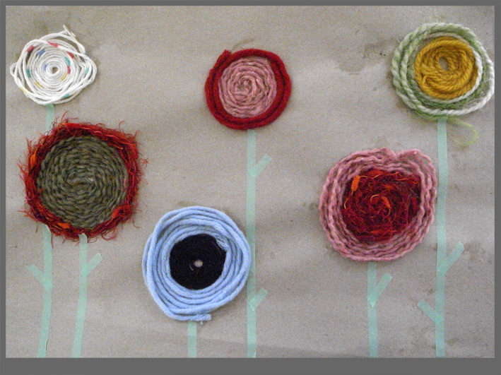
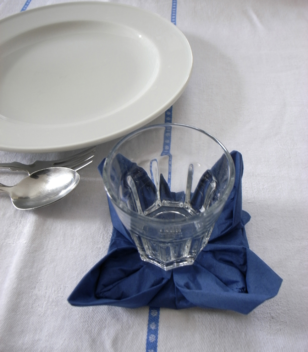
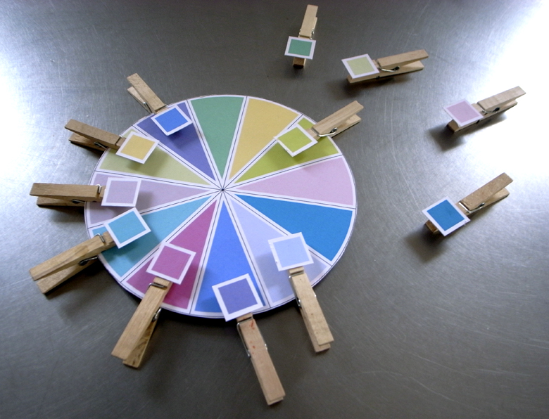

Blog

Occasion
More eggs
Before dyeing the eggs we painted them with wax crayon. On the blue and the green egg we put a rubber band.
Read more →

Paper
Napkin bunny
Napkin bunny. Look what we did with juast a napkin. Instrucción Manual Anleitung Gracias a /Thanks to /Danke an
Read more →

Material
Hiding place
A chick fixed on a stick goes up end down until we can´t see it anymore.
Read more →
Food
Eggs 02
You can dye eggs with food color. Past a sticker on the eggs and remove them after coloring them!
Read more →
Activity
Colores flowers
If you put a white flower in colored water the bloom will change her color. A kid will understand that the water goes up to the…
Read more →

Occasion
Flying eggs
Flying eggs I have to admit that to clean out the eggs is the hardest part of it. With little kids it´s better to use hard-boiled…
Read more →
Activity
Rabbit card
Stamp with the biggest finger the body of the rabbit, with the little one the head and with a brush the ears. With pieces of wool…
Read more →
Eastern
Eggs 01
Cut an egg-form out of a thick paper. Glue parts of wool and stripes of tape on the egg. When everything is dry you have to…
Read more →
kidsmobilebox
Mi primer libro!!
Este es mi primer libro. Aquesta història conta com es pot salvar les Cutimanyes. Elles són una part, molt xicoteta, del nostre medi ambient. Els grans,…
Read more →
Activity
Stamping
Cut out of foam rubber shapes you like and glue it on a piece of wood. Now you can stamp your own shapes.
Read more →

Activity
Avocado
To plant an avocado tree is easy but really amazing how there comes a tribe right out of the seed... y later on the leafs.
Read more →

Origami
Servicings
Thanks to Bilge we learned to fold servicings to decorate the table in a very special way.
Read more →
Material
Telefon number
It´s easy to lose your kid on a party with a lot s of people. On the other side of an bracelet of felt I wrote…
Read more →
Activity
City second part
. We weaved paper. Colored paper for the houses and white paper for the windows. Now everybody has its own house!
Read more →
Activity
City
With colored paper we made streets, parks, parkings, hospital, supermarket, school and cycleway ... and all that in our living room.
Read more →
Activity
Colors
PÁTRON frauliebe A circle for learning colors. You need clothes pins and this TEMPLATE . Print it and glue it on a thicker papel. Thanks for…
Read more →
Autumn
Tree
Tree You can stamp with cotton swaps the leafs of a tree. Depending on the season you want to paint you use diferent colores.
Read more →
Activity
Rabbit
PATRÓN This rabbits of felt help to keep eggs warm. For the first steps in sewing perfecto. TEMPLATE VORLAGE
Read more →